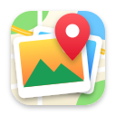
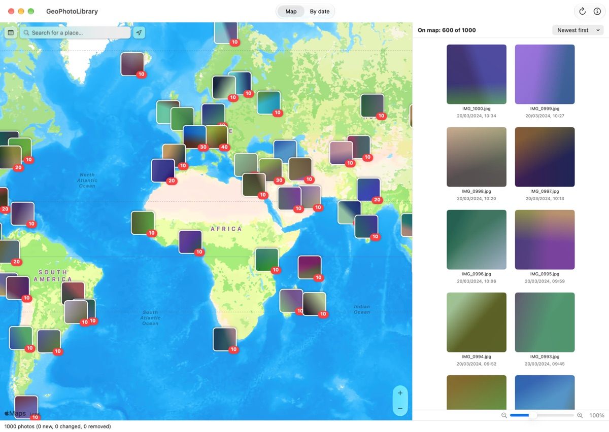

GeoPhotoLibrary
App for macOS, Linux and Windows
A photo catalog that places your photos on a map using GPS coordinates from EXIF and sorts them by date.
- Map with photo clusters and a date filter
- JPEG, HEIC and DNG, fast incremental scanning
- Native SwiftUI on macOS, GTK 4 on Linux and Windows
